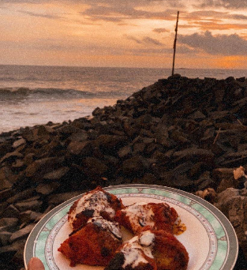
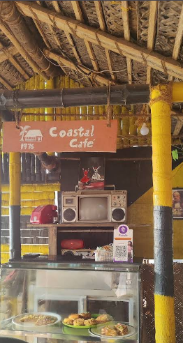
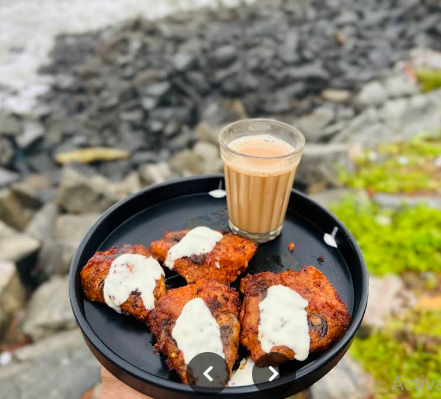
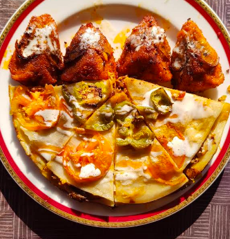
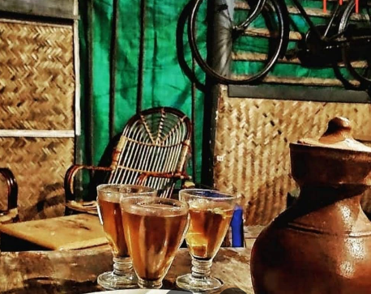
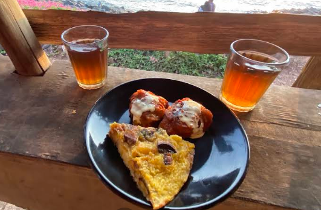

Sea breeze
included.
Settle in by the Arabian Sea, near the old sea-side landmark, Overbury’s Folly.
PALISSERY · THALASSERY · OPEN EVERY EVENING
Tea • Coffee • Malabar Bites • Sea Views
A little old-school chaayakada by the Arabian Sea. Come hungry, stay for the breeze, and let the sunset do its thing.

EVENINGSome places are made for rushing through. This one’s made for watching the waves, passing around one more snack, and stretching the evening a little longer.
Get to know our corner ↗Settle in by the Arabian Sea, near the old sea-side landmark, Overbury’s Folly.
From kallummakkaya fry to chatti pathiri, come curious and leave satisfied.
Easy, local, a little nostalgic. Just right for an evening hangout.

A LITTLE OLD-SCHOOL. ALL OURS.Find a table, order a glass of chaya, and let the waves set the pace. Bring your people, bring your appetite, stay until the sky turns gold.
Plan a seaside stop ↗
01 / FRY SOMETHING NICECrisp edges, Malabar flavour, best shared at the table.

02 / A CLASSICLayers of savoury goodness, made for a proper snack break.

03 / POUR ANOTHERHot, comforting, and somehow even better with a sea breeze.
One more chaya.
One more sunset.
We’re near Overbury’s Folly in Palissery. Drop by from 3, order your favourites, and watch Thalassery turn golden.
Get directions ↗
BEST SERVED WITH A VIEW